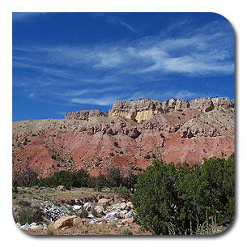

QIP 2009 |
The Twelfth Workshop on
Quantum Information Processing |
Home | Photos | Submissions | Posters | Program | Talks | Dates | Committees |

Travel InformationFor those traveling to QIP 2009 by air, the most convenient destination will likely be the Albuquerque International Sunport (ABQ). Santa Fe is located about an hour's drive away, and Sandia Shuttle provides service once an hour throughout most of the day ($25 one-way or $45 round trip). Reservations for Sandia Shuttle can be made online or by phone, and there is also a desk by the baggage claim in the airport. There are nine car rental companies located at the Sunport Car Rental Center, which is accessible by a quick shuttle ride from outside of the baggage claim area of the airport. Home | Photos | Submissions | Posters | Program | Talks | Dates | Committees |